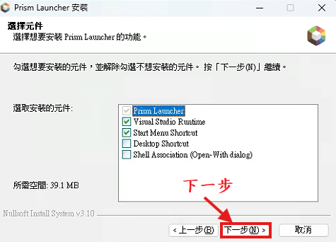
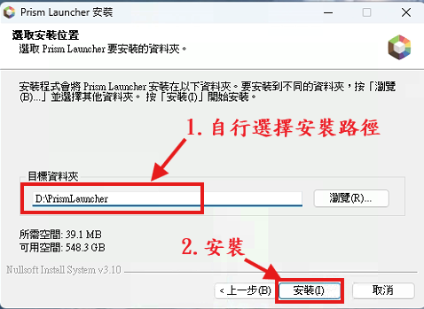
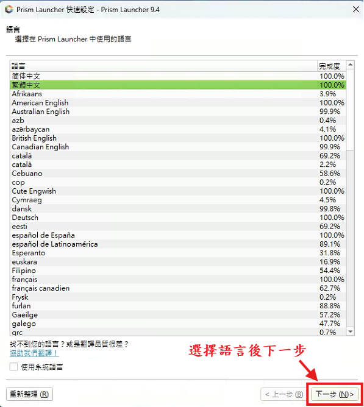
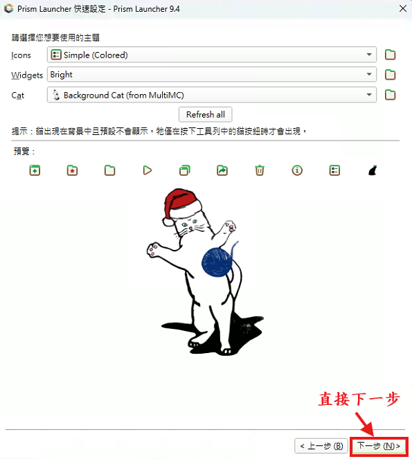
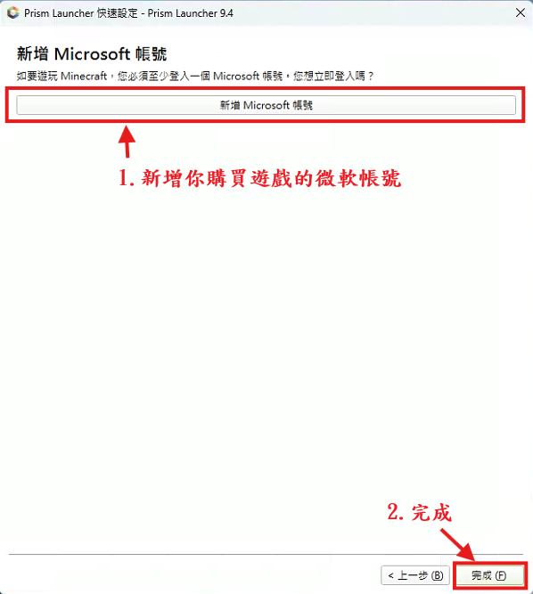
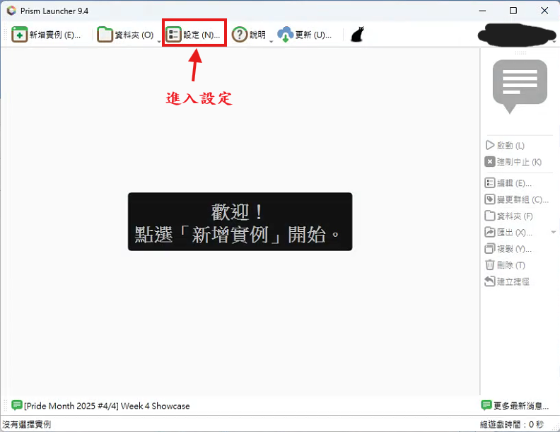
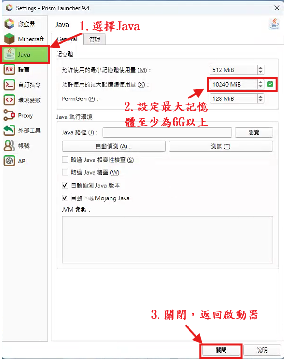
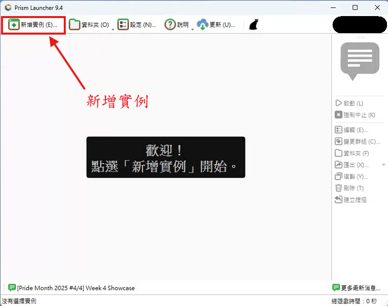
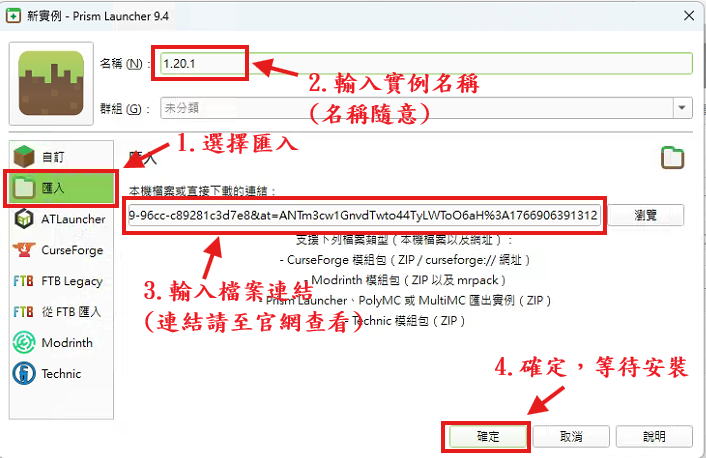
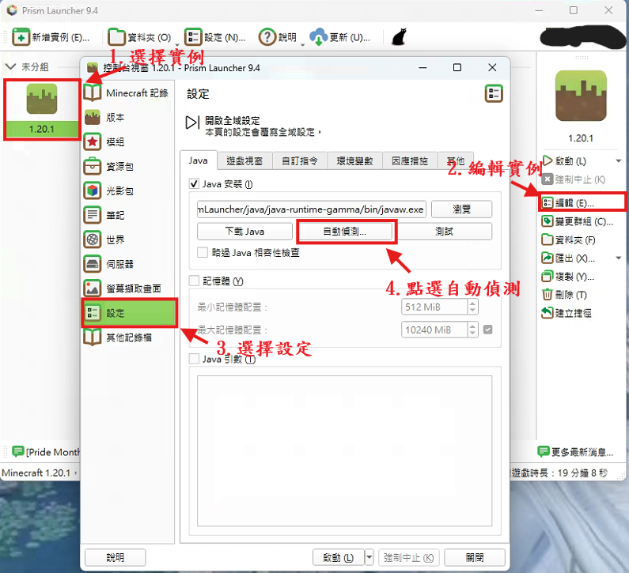

月隱伺服器｜Minecraft 1.20.1 Forge
若記憶體不足，可能會出現遊戲卡頓、讀取時間過長或直接閃退的情況。
請先下載並安裝以下必要檔案，再進行後續整合包安裝流程：
若未安裝 JAVA，遊戲將無法啟動
請先下載遊戲啟動器並安裝。
選擇 Prism Launcher 的安裝路徑後，點擊下一步。
於快速設定中選擇你習慣的語言。
其餘設定可保持預設值，直接點擊下一步。
新增你購買 Minecraft 的 Microsoft 帳號。
在 Prism Launcher 右上角或選單中，開啟設定（Settings）。
將最大記憶體（Max Memory / RAM）調整為建議值（例如 6–8GB 以上）。
設定完成後，回到啟動器新增一個新的實例。
請先複製月隱伺服器官方整合包的下載連結，並貼到 Prism Launcher 的匯入欄位中。
複製完成後，於 Prism Launcher 中選擇「匯入整合包 / 安裝包」，並將連結貼上即可開始下載。
匯入完成後回到啟動器，選取實例並點擊啟動遊戲。
若仍無法解決問題，請加入 月隱伺服器官方 Discord 詢問管理員。